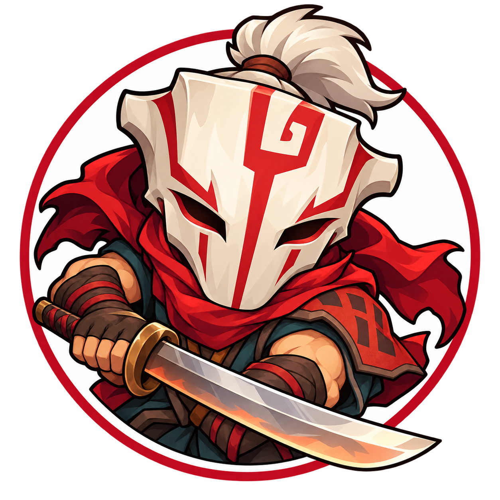

<!doctype html>
<html lang="zh-CN">
<meta charset="utf-8">
<meta name="viewport" content="width=device-width,initial-scale=1">
<title>Dota2Forge 主宰图标视觉检查</title>
<style>
body{margin:0;font:16px system-ui,"Microsoft YaHei",sans-serif;background:#eceef1;color:#222}
main{max-width:1000px;margin:24px auto;padding:0 20px}
h1{font-size:24px;margin:0 0 12px}p{margin:0 0 20px}
section{border-radius:16px;display:flex;align-items:center;gap:36px;padding:28px;margin:18px 0}
.light{background:white}.dark{background:#171a21;color:#f8f8f8}
figure{margin:0;text-align:center;min-width:90px}img{display:block;margin:auto;object-fit:contain}
figcaption{margin-top:12px;color:inherit}
</style>
<main>
<h1>Dota2Forge · Q 版主宰</h1>
<p>原始透明 PNG 的浏览器显示检查；此页为图标 QA，不是插件功能截图。</p>
<section class="light" aria-label="浅色底">
<figure><figcaption>256px / README</figcaption></figure>
<figure><figcaption>128px</figcaption></figure>
<figure><figcaption>64px / 列表</figcaption></figure>
</section>
<section class="dark" aria-label="深色底">
<figure><figcaption>256px / README</figcaption></figure>
<figure><figcaption>128px</figcaption></figure>
<figure><figcaption>64px / 列表</figcaption></figure>
</section>
</main>
</html>
